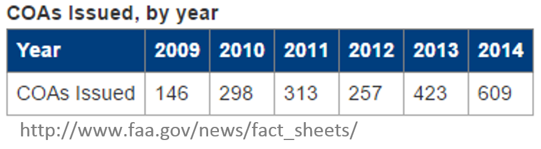
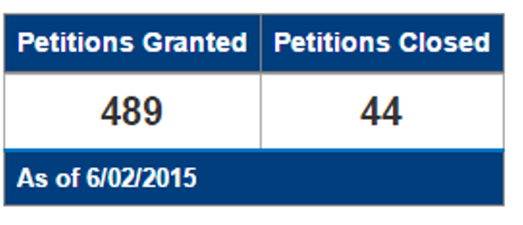

Aviation Regulatory regarding UAS
GIS595/MEA792: UAV/lidar Data Analytics
Author
NCSU
OSGeoREL
at
Center for Geospatial Analytics
Fall 2016
Federal Aviation Adminiostration (FAA)
- Created in 1958 in response to a series of fatal accidents and midair collisions involving commercial aircraft;
- Mandated to develop plans and policies for the use of navigable airspace to ensure the safety of aircraft and the efficient use of airspace;
- Since the creation of the FAA, American airspace has become one of the most regulated fields in the United States.

National Airspace Sysyem (NAS)
- Already congested with piloted aircraft, and adding a swarm of UAVs requires thoughtful planning;
- Main mandate - to ensure that UASs do not endanger current users of the NAS (including manned or other unmanned aircraft) nor compromise the safety of the people and property on the ground
- When it comes to the safe operation and integration of the UAS into the NAS, one of the main concern that the FAA has is the lack of detect-sense-and avoid capability of the current UAS technology
FAA and UAS
- The Unmanned Aircraft Program Office (UAPO), FAA Aircraft Certification Service (AIR-160);
- The Production and Airworthiness Division, FAA Aircraft Certification Service (AIR-200);
- The Flight Technologies and Procedures Division, FAA Flight Standards Service (AFS-400);
- The FAA Air Traffic Organization’s Office of System Operations and Safety, (AJR-3);

Certificate of Waiver or Authorization (COA)
- available to government entities that want to fly a UAS in civil airspace;
- Applicants must submit their COA request through an online system;
- Even for public agencies, COA cannot be guaranteed, and COAs may take different lengths of time or have some restrictions built in.
- 

Section 333 Exemptions
- available to government entities that want to fly a UAS in civil airspace;
- Applicants must submit their COA request through an online system;
- Even for public agencies, COA cannot be guaranteed, and COAs may take different lengths of time or have some restrictions built in.

- Even with the heavy restrictions that surrounded these exemptions, the move was welcomed by companies who are planning to use UAS for various commercial tasks
Section 333 Exemptions
- available to government entities that want to fly a UAS in civil airspace;
- Applicants must submit their COA request through an online system;
- Even for public agencies, COA cannot be guaranteed, and COAs may take different lengths of time or have some restrictions built in.
- Even with the heavy restrictions that surrounded these exemptions, the move was welcomed by companies who are planning to use UAS for various commercial tasks
Special Airworthiness Certificate (SAC)
- applicants must be able to describe how their system is designed, constructed, and manufactured, including engineering processes, software development and control, configuration management, and quality assurance procedures used, along with how and where they intend to fly.
- in the Experimental Category – may be used for civil aircraft to perform research and development, crew training, and market surveys; however, carrying persons or property for compensation or hire is prohibited
- in the Restricted Category (14 CFR § 21.25(a)(2) and § 21.185) for a special purpose or a type certificate for production of the UAS under 14 CFR § 21.25(a)(1) or § 21.17